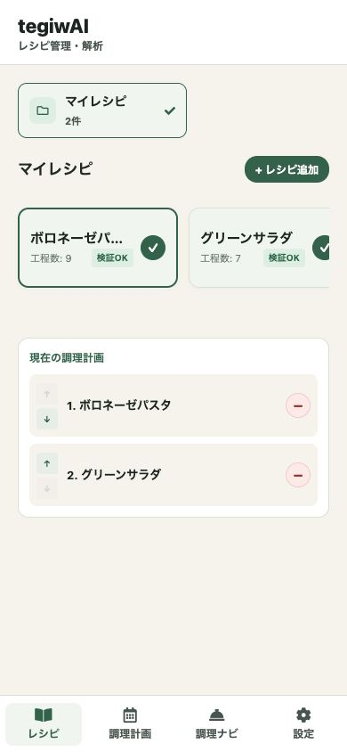
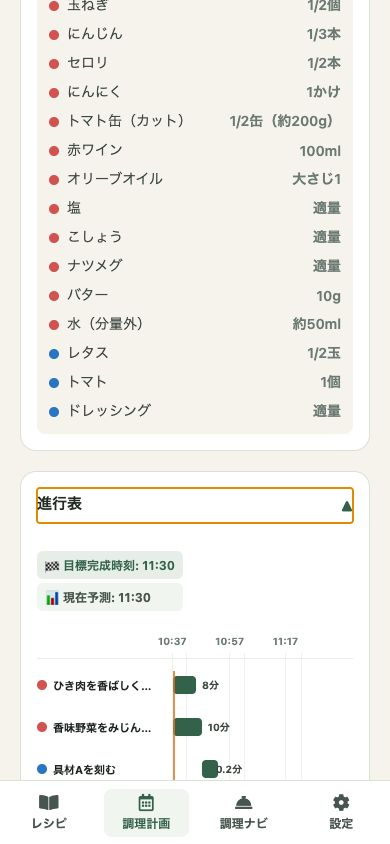
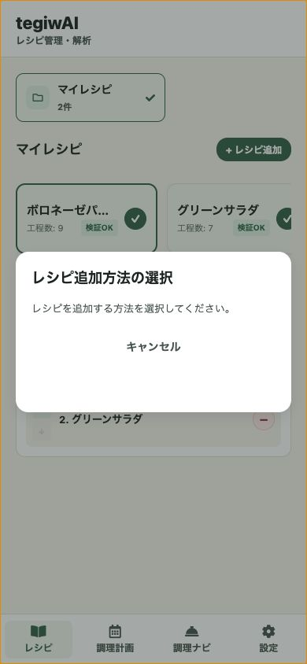
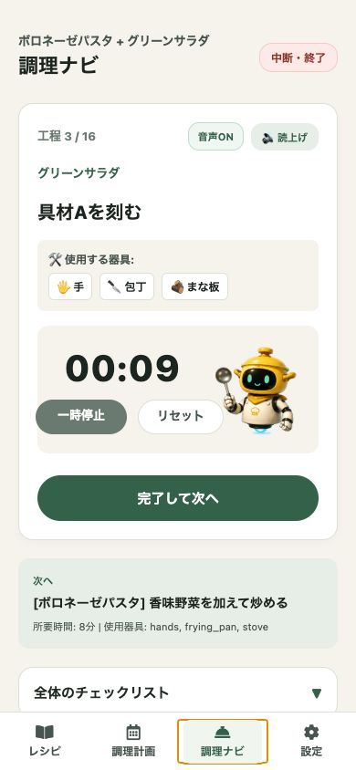

1.0
レシピを選ぶ
よく作る料理を一覧で管理。工程数やタグを見ながら、その日に作るものを先に決められます。

01 / recipe to run sheet
tegiwAIは、レシピの文章を調理工程、スケジュール、タイマー、音声ガイドに整理します。台所で迷う時間を減らし、手を動かす順番をはっきりさせるアプリです。
iOS版公開中。Android版は開発中です。

02 / how it works
一覧、入力、計画、実行。料理中に見る画面を、実際のスクリーンショットで追えるようにしました。
1.0
よく作る料理を一覧で管理。工程数やタグを見ながら、その日に作るものを先に決められます。

2.0
レシピ本文を材料と手順に整理。外部AIサービスを使う場合も、送る内容を確認してから進めます。

3.0
加熱、待ち時間、下ごしらえを時間軸に配置。複数品を作るときも、どの作業が重なるかを見渡せます。
4.0
調理中は現在の工程、残り時間、次の工程を大きく表示。手が離せないときは音声ガイドも使えます。

03 / kitchen ledger
工程を時系列にして、次に何をすればよいかを見失いにくくします。
調理画面で現在の作業と残り時間を確認できます。
必要な情報を調理中の表示に寄せ、文章を読む回数を減らします。
音声ガイドで、画面を触りにくい場面でも次の工程を確認できます。
04 / privacy
アカウント登録なしで利用できます。レシピ、調理計画、設定は、ユーザーが共有や送信を選ばない限り端末内に保存されます。
05 / start small
毎日の料理を少し落ち着いて進めるためのアプリです。公開中のiOS版から試せます。